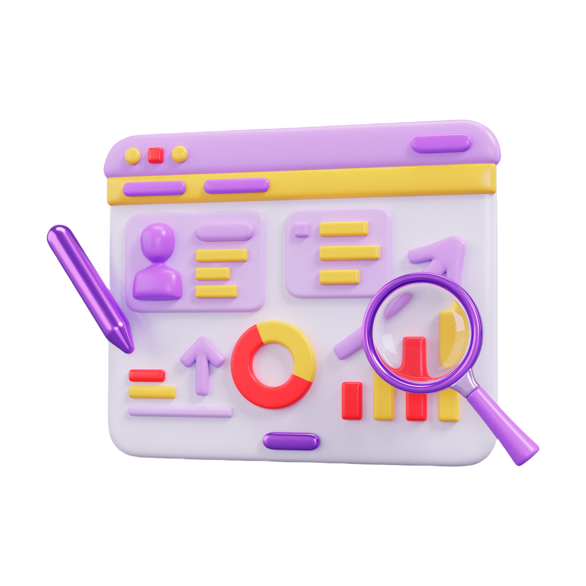
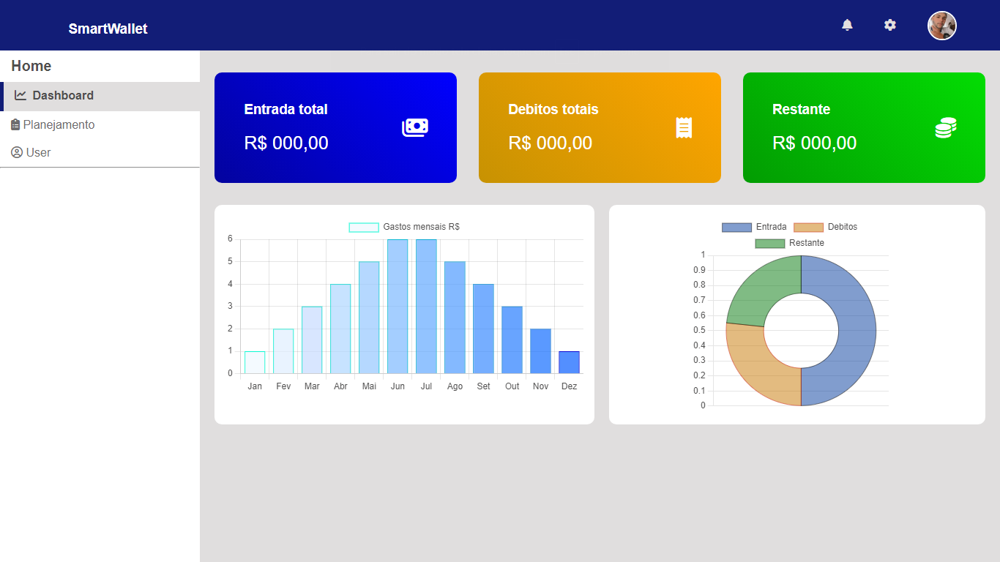
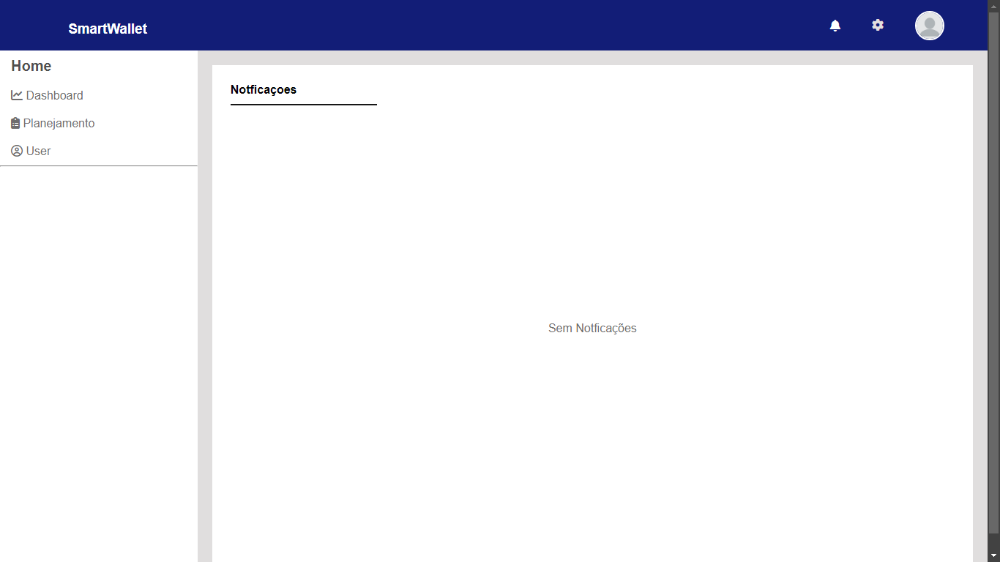

Gestão e controle financeiro
Para você, completo e gratuito*

SmartWallet
Para você, completo e gratuito*
Com o controle, você está a um passo de suas metas e objetivos
Na Smart Wallet, sabemos que a gestão eficaz dos seus gastos é crucial para uma vida financeira saudável. Nossos dashboards de gastos foram projetados para ajudar você a controlar e otimizar suas despesas de maneira simples e eficiente.
Análise Detalhada: Nossos dashboards fornecem uma visão abrangente das suas finanças, categorizando suas despesas e oferecendo insights detalhados sobre onde seu dinheiro está sendo gasto. Com gráficos e relatórios intuitivos, você pode facilmente identificar padrões e áreas onde é possível economizar.
Controle de Orçamento: Defina e acompanhe seu orçamento com facilidade. Nossos recursos de planejamento permitem que você estabeleça metas financeiras e monitore seu progresso ao longo do tempo. Ajuste seu orçamento com base em suas necessidades e veja como suas finanças estão se saindo em relação às suas metas.
Alertas e Notificações: Mantenha-se informado com alertas personalizados que o ajudam a evitar gastos excessivos. Receba notificações sobre despesas que estão se aproximando dos limites do seu orçamento e ajuste seus hábitos de gasto de acordo.
Com a Smart Wallet, a gestão dos seus gastos se torna uma tarefa fácil e agradável. Nossa plataforma foi projetada para fornecer todas as ferramentas necessárias para que você tenha total controle sobre suas finanças e alcance seus objetivos financeiros com confiança.
Bem-vindo à Smart Wallet! Somos líderes em soluções inovadoras para gestão financeira pessoal. Nossa missão é capacitar você a tomar decisões financeiras mais inteligentes e informadas com a ajuda de nossos dashboards de gastos intuitivos e eficazes.
Na Smart Wallet, entendemos que a gestão de despesas pode ser um desafio. Por isso, desenvolvemos ferramentas que tornam o acompanhamento dos seus gastos simples e direto. Nossos dashboards oferecem uma visão clara e detalhada de suas finanças, permitindo que você monitore seu orçamento e identifique áreas de economia com facilidade.
Estamos comprometidos em fornecer soluções que não só atendem às suas necessidades atuais, mas também se adaptam ao seu estilo de vida em constante mudança. Nossa abordagem combina design elegante e funcionalidade avançada para criar produtos que você realmente usa e aprecia.
Na Smart Wallet, acreditamos que a gestão financeira eficaz é a chave para uma vida financeira saudável. Junte-se a nós e descubra como nossos dashboards podem transformar a maneira como você gerencia seus gastos e alcança seus objetivos financeiros.